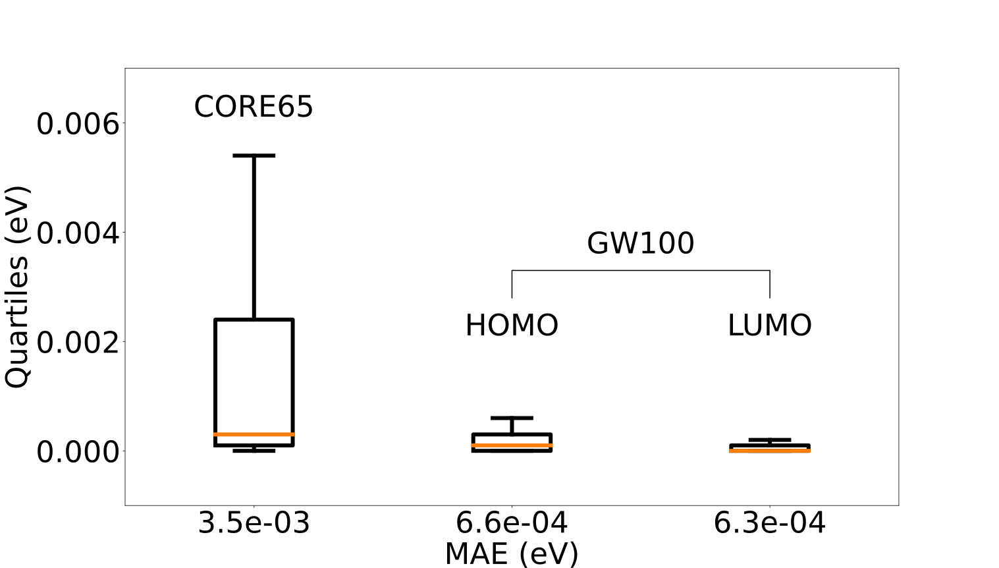

Many-body methods, like the GW approximation, have recently proven to
be a highly effective tool for computing core-level excitations [1]. In particular,
the contour deformation (CD) is an efficient, scalable and numerically stable
approach that has enabled core-level calculations on systems up to 100 atoms [2].
In this work, we reduce the scaling of CD applied to core-levels from \(O(N^5)\)
to \(O(N^4)\), using an analytic continuation of the screened Coulomb interaction
W [3]. The new method (CD-WAC) has been implemented in
FHI-aims. CD-WAC has been extensively
tested on well established benchmark sets like the GW100 and the CORE65 [4],
reporting MAEs of less than 5 meV with respect to CD.
The theoretical scaling has been confirmed by performing scaling experiments
on large acene chains and amorphous carbon. Speedups of 5 times have been
attained with CD-WAC for the largest systems.
The contour deformation method
A clever application of Jordan's Lemma and
Cauchy's residue theorem.
Integral self-energy expression is a consequence of
the Convolution theorem.
\[
\displaystyle
\small
\begin{align*}
\Sigma(\mathbf{r},&\mathbf{r}',\omega) = \frac{i}{2\pi}\oint d\omega' G_0(\omega+\omega')W_0(\omega')\\
& =\int_{\Re}+\int_{\Im}+\int_{D_{\Gamma^+}}+\int_{D_{\Gamma^-}}\\[2pt]
& = \frac{i}{2\pi}\oint d\omega'
G_{0}(\mathbf{r},\mathbf{r}',\omega+\omega')W_{0}(\mathbf{r},\mathbf{r}',\omega')\\[1pt]
& -\frac{1}{2\pi}\int_{-\infty}^{+\infty}d\omega'G_{0}(\mathbf{r},\mathbf{r}',\omega+i\omega')
W_{0}(\mathbf{r},\mathbf{r}',i\omega')\\[4pt]
& = R(\omega) - I(\omega)
\end{align*}
\]
Constructing W using RI-V: the CD way
Many quantities involving 4-center integrals can be efficiently computed in FHI-aims
using the resolution of the identity with coulomb metric (RI-V). The \(W_{mn}(\omega)\)
matrices of CD are no exception:
\[
W_{mn}(\omega) = \sum_{PQ}O_{P}^{nm}[\mathbf{1} -
\mathbf{\Pi}(|\epsilon_m - \omega| + i\eta)]^{-1}_{PQ}O_{Q}^{mn}
\]
where the polarizability matrices are given by:
\[
\Pi_{PQ}(i\omega) = 2 \sum_{ia}O_P^{ia}
\frac{\epsilon_i-\epsilon_a}{\omega^2 + (\epsilon_i-\epsilon_a)^2}O_Q^{ia}
\]
Analytic continuation of W: the rationale for CD-WAC
Analytic continuation techniques using Padé approximants have been used in GW for
computing the self-energy \(\Re\Sigma_n(\omega)\), but until very recently [3] this idea
was not fully exploited for the screened Coulomb interaction matrices. In the context of CD, it allows the
reduction of the scaling as the \(W_{mn}(\omega)\) matrices needed for the integral \(R(\omega)\) can
be computed by direct evaluation of a Thiele interpolant constructed as follows:
\[
W_{nm}(z) = \cfrac{a_1}{1+\cfrac{a_{2}(z^2-\omega^2_{1})}
{1+\cfrac{a_{3}(z^2-\omega^2_{2})}{1+\cdots+
\cfrac{a_p(z^2-\omega^2_{p-1})}{1 + (z^2-\omega^2_p)g_{p+1}(z)}}}}
\]
The asymptotic behavior of the algorithms for computing the \(R(\omega)\) and \(I(\omega)\)
terms is:
\[R \sim N_{res}N_{occ}N_{virt}N^2_{aux} \qquad I \sim N_{\omega}N_{occ}N_{virt}N^2_{aux}\]
We are interested in core level spectroscopy. In this case, the integration grid for imaginary frequencies is
independent of the system size, whereas the number of residues is proportional to number of occupied states.
This implies that the global scaling of CD increases to \(O(N^5)\) for the deepest states.
CD-WAC implementation details
The new method has been implemented in FHI-aims. The algorithmic
details shared with CD can be found on Reference [2]. The CD-WAC approach builds
upon a series of heuristic optimizations, presented in the flowchart below. CD-WAC can be used for both
core and valence levels. For the latter it suffices to reuse the computed \(W_{mn}(i\omega)\) matrices. Core
levels are more complicated: additional complex frequencies near the real axis are needed
to achieve the desired accuracy. This points can be chosen in a black-box fashion using a real
component that covers the desired frequency range, or a more sophisticated selection of multiple
regions.

Performance and validation of CD-WAC
Validation of the CD-WAC method with respect to CD using the
GW100 and CORE65 tests suites. The level of theory is \(G_0W_0\)@PBE/def2-QVPZ and
\(G_0W_0\)@PBE/def2-TVPZ respectively. For the valence states of the GW100 set only imaginary frequencies
were used, for the CORE65 50 additional frequencies on two regions were employed.

Scaling plot comparing CD and CD-WAC applied to large acene chains C4n+2H2n+4
with n ranging from 1 to 15. We were interested on the C1s core level of the molecules, the level of
theory of the calculations is \(G_0W_0\)@PBE0(\(\alpha=0.5\))/def2-QVPZ. The expected scale reduction
is thus verified by the numerical experiment.
The full monty example: H2O molecule
The following example illustrates the predictive power of CD-WAC compared to CD. We have
represented the screened coulomb interaction matrix element \(W_{11}\), the self-energy
matrix element \(\Sigma_{1s}\), and the corresponding spectral function \(A_{1s}\). The
level of theory for these calculation was \(G_0W_0\)@PBE0 def2-TVPZ. It is worth noticing
that the CD-WAC calculation for obtaining this observables was ~ 30 times faster.
References and web version

-
D. Golze, M. Dvorak, and P. Rinke. Front. Chem. 7 (2019): 377.
- D. Golze, J. Wilhelm, M.J. Van Setten, and P. Rinke.
J. Chem. Theory Comput., 14(9):4856–4869, 2018.
- I. Duchemin and X. Blase. J. Chem. Theory Comput., 16(3):1742–1756, 2020.
- D. Golze, L. Keller, and P. Rinke. J. Phys. Chem. Lett.
11.5 (2020): 1840-1847.